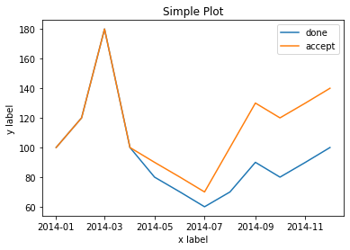
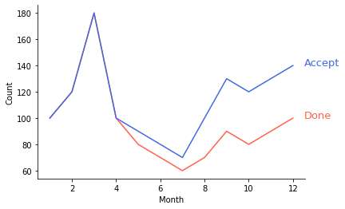
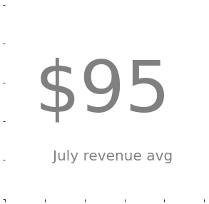
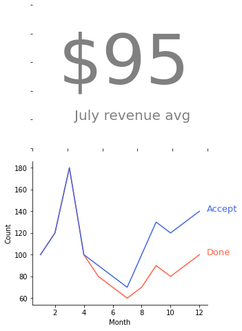

Matplotlib Tips¶
[2]:
import matplotlib.pyplot as plt
import pandas as pd
from matplotlib.pylab import rcParams
from matplotlib.gridspec import GridSpec, GridSpecFromSubplotSpec
rcParams['figure.figsize'] = 15,10
%matplotlib inline
[3]:
df = pd.DataFrame(
[
['2014/01', 100, 100],
['2014/02', 120, 120],
['2014/03', 180, 180],
['2014/04', 100, 100],
['2014/05', 80, 90],
['2014/06', 70, 80],
['2014/07', 60, 70],
['2014/08', 70, 100],
['2014/09', 90, 130],
['2014/10', 80, 120],
['2014/11', 90, 130],
['2014/12', 100, 140],
],
columns=['date', 'done', 'accept']
)
[4]:
df['date'] = pd.to_datetime(df['date'])
そのままで描画する場合¶
[5]:
fig, ax = plt.subplots()
def line_plot_original(ax):
ax.plot(df['date'], df['done'], label='done')
ax.plot(df['date'], df['accept'], label='accept')
ax.set_xlabel('x label') # X軸にラベルを追加
ax.set_ylabel('y label') # Y軸にラベルを追加
ax.set_title("Simple Plot") # タイトルを追加
ax.legend() # 判例を追加
line_plot_original(ax)

Google流資料作成術の方法を取り入れた場合¶
[6]:
fig, ax = plt.subplots()
def line_plot(ax):
df['month'] = df['date'].apply(lambda x: x.month )
ax.plot(df['month'], df['done'], label='done', color='#ff6347')
ax.plot(df['month'], df['accept'], label='accept', color='#4169e1')
ax.spines['right'].set_visible(False) # 上の枠を消す
ax.spines['top'].set_visible(False) # 右の枠を消す
ax.set_xlabel('Month') # X軸にラベルを追加
ax.set_ylabel('Count') # Y軸にラベルを追加
ax.text(12.5, 100, "Done", size = 13, color = "#ff6347") # 凡例の代わりに折れ線の右側に添える
ax.text(12.5, 140, "Accept", size = 13, color = "#4169e1")
line_plot(ax)

スコアカードを作る¶
[7]:
def scorecard(ax):
number = f'${int(df["done"].mean())}'
text = """
July revenue avg
""".strip()
text_len_list = [len(i) for i in text.split('\n')]
text_len = max(text_len_list)
text_row_len = len(text_len_list)
# fig = plt.figure(figsize=(5,5))
# ax = fig.add_subplot()
ax.spines['right'].set_visible(False)
ax.spines['top'].set_visible(False)
ax.spines['bottom'].set_visible(False)
ax.spines['left'].set_visible(False)
ax.tick_params(labelbottom=False,
labelleft=False,
labelright=False,
labeltop=False)
plt.tick_params(bottom=False,
left=False,
right=False,
top=False)
ax.text(0.15, 0.45, number , size = 100, color = "gray")
ax.text(0.24, 0.2, text , size = 20, color = "gray")
fig = plt.figure(figsize=(5,5))
ax = fig.add_subplot()
scorecard(ax)

Gridspecの使い方¶
[8]:
figure = plt.figure(figsize=(10, 8))
gs = GridSpec(nrows=4, ncols=2, height_ratios=[1, 1, 1, 1])
gs_sub = {}
axes = {}
gs_sub[0] = GridSpecFromSubplotSpec(nrows=2, ncols=1, subplot_spec=gs[0:2, 0])
axes[0] = figure.add_subplot(gs_sub[0][:, :])
scorecard(axes[0])
gs_sub[1] = GridSpecFromSubplotSpec(nrows=1, ncols=1, subplot_spec=gs[2:4, 0])
axes[1] = figure.add_subplot(gs_sub[1][:, :])
line_plot(axes[1])

[ ]: